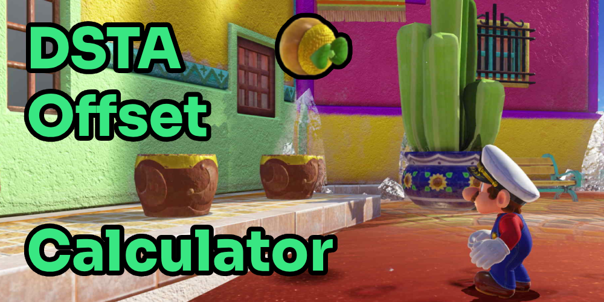

Made by
tryxdc
This calculator is
not perfect
.
It should be a close estimate.
Console
Switch 1
Switch 2
Town Route
Regular
Reverse
Cascade Exit Time
Recommended: Use your Sum of Best's Exit
Minutes
Seconds
Calculate
You have not filled in all the information!
Use an offset of -[]
With the clock set at :[]